Austin Travel Guide
Capital city of Texas and one of the fastest growing large cities in the United States since 2010, is located in Central Texas within the greater Texas Hill Country, and is home to numerous lakes, rivers, and waterways and known as "The Live Music Capital of the World"
Top Locations
Places to See in Austin

Jeff P from Berkeley, CA, USA, CC BY 2.0, via Wikimedia Commons; Image Size Adjusted
.jpg){kind=link}
Ann W. Richards Congress Avenue Bridge (Bat Refuge)
Home to the world's largest urban bat colony that emerge from underneath the bridge at dusk across Lady Bird Lake attract as many as 100,000 tourists annually
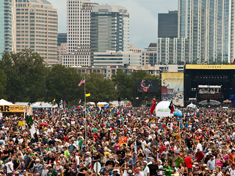
Jeff P from Berkeley, CA, USA, CC BY 2.0, via Wikimedia Commons; Image Size Adjusted
Austin City Limits Music Festival
Annual music festival held in Zilker Park in Austin on two consecutive three-day weekends
Jeff P from Berkeley, CA, USA, CC BY 2.0, via Wikimedia Commons; Image Size Adjusted
Barton Creek Greenbelt
7.25-mile (11.67 km) stretch of public land that begins at Zilker Park and stretches South/Southwest to "The Hill of Life". Characterized by large limestone cliffs, dense foliage, and shallow bodies of water
7.25-mile (11.67 km) stretch of public land that begins at Zilker Park and stretches South/Southwest to "The Hill of Life". Characterized by large limestone cliffs, dense foliage, and shallow bodies of water
Jeff P from Berkeley, CA, USA, CC BY 2.0, via Wikimedia Commons; Image Size Adjusted
Barton Springs Pool
Outdoor swimming pool that is filled entirely with water from nearby natural springs and is a popular venue for year-round swimming
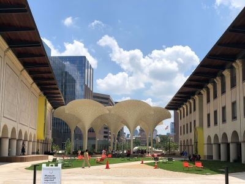
Jeff P from Berkeley, CA, USA, CC BY 2.0, via Wikimedia Commons; Image Size Adjusted
Blanton Museum of Art
Expansive art museum featuring global collections, immersive installations, and rotating exhibitions across diverse artistic periods and styles.
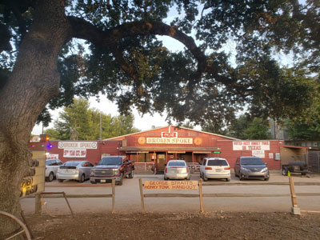
Jeff P from Berkeley, CA, USA, CC BY 2.0, via Wikimedia Commons; Image Size Adjusted
Broken Spoke
Historic honky tonk dance hall featuring live country music, two step dancing, and authentic Texas roadhouse atmosphere with a wooden dance floor.
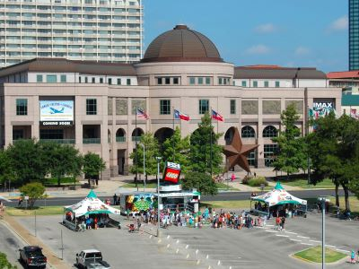
Jeff P from Berkeley, CA, USA, CC BY 2.0, via Wikimedia Commons; Image Size Adjusted
Bullock Texas State History Museum
Three-story museum featuring immersive exhibits, rare artifacts, and theaters that chronicle the dynamic history and culture of Texas.
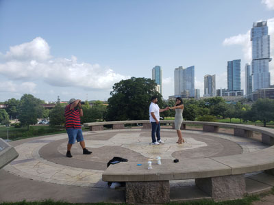
Jeff P from Berkeley, CA, USA, CC BY 2.0, via Wikimedia Commons; Image Size Adjusted
Butler Metro Park
Urban park featuring open green spaces, walking trails, skyline viewpoints, playground areas, and scenic access to a lakeside recreational corridor.
Cathedral of Junk
A multi-level folk art environment constructed from thousands of repurposed everyday objects, creating a maze-like walk-through sculpture filled with creative details and whimsical displays.
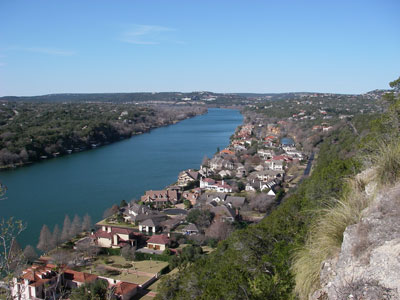
Jeff P from Berkeley, CA, USA, CC BY 2.0, via Wikimedia Commons; Image Size Adjusted
Covert Park at Mount Bonnell
Prominent point alongside the Lake Austin portion of the Colorado River in Austin providing a vista for viewing the city of Austin, Lake Austin, and the surrounding hills
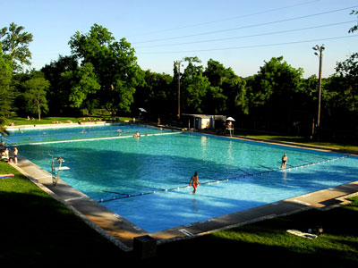
Jeff P from Berkeley, CA, USA, CC BY 2.0, via Wikimedia Commons; Image Size Adjusted
Deep Eddy Pool
Historic, man-made swimming pool in Austin is the oldest swimming pool in Texas and features a bathhouse built during the Depression era by the Works Progress Administration and today is a popular swimming pool
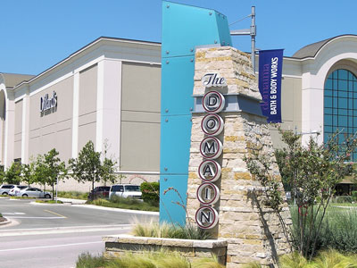
Jeff P from Berkeley, CA, USA, CC BY 2.0, via Wikimedia Commons; Image Size Adjusted
The Domain
700,000 square feet (65,000 m2) of restaurants, upscale retail stores, apartments, and a hotel, along with 70 specialty stores
Franklin Barbecue
Barbecue restaurant located in Austin that has attracted a national following

Jeff P from Berkeley, CA, USA, CC BY 2.0, via Wikimedia Commons; Image Size Adjusted
Lady Bird Lake
Major recreation area located on river-like reservoir on the Colorado River directly south of downtown Austin, bounded by the Ann and Roy Butler Hike-and-Bike Trail, offering recreational watercraft services along the lakefront and site of the SXSW Festival
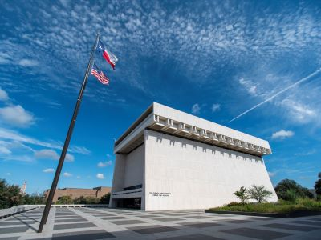
Jeff P from Berkeley, CA, USA, CC BY 2.0, via Wikimedia Commons; Image Size Adjusted
LBJ Presidential Library
Extensive museum and archive preserving the legacy of a U.S. president through exhibits, documents, and interactive displays.
Jeff P from Berkeley, CA, USA, CC BY 2.0, via Wikimedia Commons; Image Size Adjusted
McKinney Falls State Park
State park in Austin, at the confluence of Onion Creek and Williamson Creek, includes several hiking trails and the namesake features of the park, the scenic upper and lower falls along Onion Creek
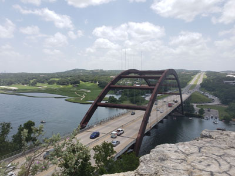
Jeff P from Berkeley, CA, USA, CC BY 2.0, via Wikimedia Commons; Image Size Adjusted
Pennybacker Bridge
Road accross bridge widely considered one of the most scenic urban drives in Texas, in large part due to this arched weathering-steel bridge and the rolling hills that flank the road
Jeff P from Berkeley, CA, USA, CC BY 2.0, via Wikimedia Commons; Image Size Adjusted
Rainey Street
Street of historic homes designed in bungalow style in downtown Austin, fixed up and turned into bars and cocktail lounges with ample backyards and porches
Jeff P from Berkeley, CA, USA, CC BY 2.0, via Wikimedia Commons; Image Size Adjusted
Sixth Street
Historic street with buildings designed in two- or three-story masonry Victorian commercial architecture is a major entertainment district with many bars, clubs, music venues, and shopping destinations offering live music
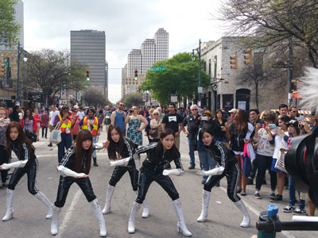
Jeff P from Berkeley, CA, USA, CC BY 2.0, via Wikimedia Commons; Image Size Adjusted
SXSW South by Southwest Festival
Annual conglomeration of parallel film, interactive media, and music festivals and conferences organized jointly in mid-March in Austin
Jeff P from Berkeley, CA, USA, CC BY 2.0, via Wikimedia Commons; Image Size Adjusted
South Congress Avenue
Neighborhood located on South Congress Avenue in Austin nationally known for shopping and cultural district known for its many eclectic small retailers, restaurants, music, art venues, and food trucks
St Mary Cathedral
Cathedral is the cathedral parish of the Catholic Diocese of Austin located in Austin and was listed on the National Register of Historic Places in 1973
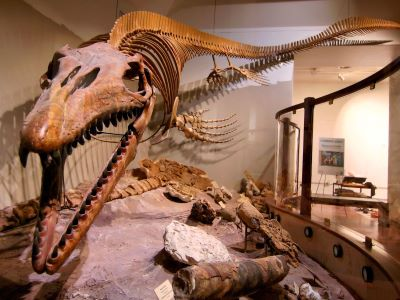
Jeff P from Berkeley, CA, USA, CC BY 2.0, via Wikimedia Commons; Image Size Adjusted
Texas Science and Natural History Museum
Interactive exhibits and fossil displays that explore the natural history of Texas from prehistoric times to the present.
Jeff P from Berkeley, CA, USA, CC BY 2.0, via Wikimedia Commons; Image Size Adjusted
Texas State Capitol
Designed in 1881 The building Capitol is 302.64 feet (92.24 m) tall, making it the sixth-tallest state capitol and one of several taller than the United States Capitol and was added to the National Register of Historic Places and a National Historic Landmark
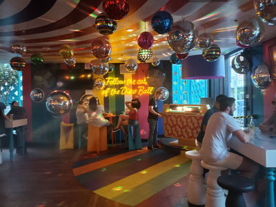
Jeff P from Berkeley, CA, USA, CC BY 2.0, via Wikimedia Commons; Image Size Adjusted
Wonder Bar
Interactive themed cocktail venue featuring colorful rooms, immersive art installations, and playful drink presentations designed for social experiences and photography.
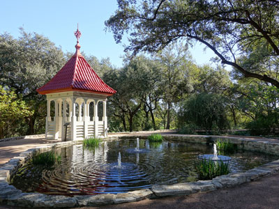
Jeff P from Berkeley, CA, USA, CC BY 2.0, via Wikimedia Commons; Image Size Adjusted
Zilker Botanical Garden
Botanical garden of varied topography located on the south bank of the Colorado River near downtown Austin
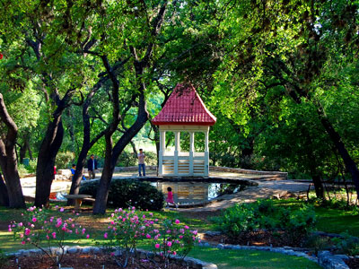
Jeff P from Berkeley, CA, USA, CC BY 2.0, via Wikimedia Commons; Image Size Adjusted
Zilker Park
Hub for many recreational activities and the hike and bike trail around Lady Bird Lake and includes general-purpose lawns, sports fields, picnic areas, numerous public attractions and host the Austin City Limits Festival
Overview
Austin is the capital city of Texas and the seat of Travis County, on the Colorado River in Central Texas where the Balcones Escarpment meets the rolling terrain of the Texas Hill Country. With about one million residents in the city and more than 2.5 million in the metropolitan area, it has been one of the fastest-growing large cities in the United States since 2010. Austin is famous as "The Live Music Capital of the World," as the home of the University of Texas at Austin, one of the largest universities in the country, and as a major technology center nicknamed "Silicon Hills," with the headquarters of Dell and large campuses of Apple, Oracle, Tesla and Samsung. The city's unofficial motto, "Keep Austin Weird," celebrates its independent shops, quirky art and laid-back, outdoorsy spirit.
People visit Austin for live music every night, the Texas State Capitol, big festivals such as South by Southwest (SXSW), Austin City Limits Music Festival and the Formula 1 United States Grand Prix, outdoor recreation on lakes and springs, Texas barbecue and breakfast tacos, and the nearby Hill Country, with its wineries, swimming holes and small towns. The nightly emergence of up to 1.5 million Mexican free-tailed bats from the Ann W. Richards Congress Avenue Bridge is one of the city's most unusual sights. Austin has warm weather most of the year, though summers are very hot, and a young, creative, friendly vibe.
After Texas won independence from Mexico in 1836, President Mirabeau B. Lamar chose the village of Waterloo on the Colorado River as the site for the new capital of the Republic of Texas in 1838. It was renamed Austin for Stephen F. Austin, the "Father of Texas," and was incorporated in 1839. The capital was moved several times during early statehood but returned permanently to Austin, and the present Texas State Capitol, built of pink granite and completed in 1888, is taller than the U.S. Capitol. The University of Texas opened in 1883, and Austin grew as a government and university town. In the 1970s a music scene built around musicians such as Willie Nelson and Stevie Ray Vaughan and venues such as the Armadillo World Headquarters made the city a center of "outlaw country" and blues, and the PBS series Austin City Limits began in 1974. A high-tech boom starting in the 1980s, led by companies such as Dell and Whole Foods, which was founded in Austin in 1980, has made the city a major economic center, and SXSW began in 1987.
6th Street is the heart of downtown Austin's nightlife, with dozens of bars, clubs and live music venues in a historic district of Victorian-era buildings. The eastern stretch, known as "Dirty Sixth," between Congress Avenue and I-35, is lively and rowdy with shot bars and cover bands, especially on weekends, and the western stretch is more upscale, with cocktail bars and restaurants. The Red River Cultural District, a couple of blocks east, is home to many of the city's best-known live music clubs, such as Stubb's, Mohawk and Cheer Up Charlies. Austin has more live music venues per capita than any other U.S. city, with music nearly every night, and the Broken Spoke is a classic Texas dance hall, while ACL Live at the Moody Theater tapes Austin City Limits. Other nightspots include the Wonder Bar at the Domain. Most venues are walkable from downtown hotels, and rideshare is recommended late at night.
South Congress Avenue, known as "SoCo," is a shopping and dining district stretching south from the Colorado River and Lady Bird Lake. Known for its eccentric stores, vintage shops, boot makers, food trucks, coffee shops and live music, the street epitomizes the "Keep Austin Weird" spirit. Highlights include the famous "I love you so much" mural at Jo's Coffee, Allens Boots, Güero's Taco Bar, the Continental Club, Hotel San José and the Austin Motel sign. First Thursday events bring crowds and music to the avenue each month, and it offers stunning views of the Capitol, and a short walk to the bat bridge.
The Rainey Street Historic District is a neighborhood in downtown Austin near Lady Bird Lake that was once a quiet residential street of early 20th-century bungalows. Since the early 2010s, many of the houses have been converted into bars, restaurants and food truck parks with large patios and backyards, and the street has become one of the city's most popular nightlife spots. It is known for a laid-back, front-porch atmosphere with craft cocktails, local beer, Tex-Mex and live music, and is close to Lady Bird Lake, the Emma S. Barrientos Mexican American Cultural Center and the convention center. Rainey Street is busy on weekends and can have lines.
The Texas State Capitol is free to tour and is Austin's most important landmark, at the end of Congress Avenue. The Congress Avenue Bridge bat flight takes place at dusk from March through October, with the largest numbers in late summer. Mount Bonnell is a popular overlook above Lake Austin, and the Pennybacker Bridge is a scenic arch bridge. Quirky attractions include the Cathedral of Junk, a backyard sculpture made of recycled objects. The Domain is an upscale shopping and dining district in north Austin, and St. Mary Cathedral is a Gothic Revival landmark. The University of Texas campus and its iconic tower, the LBJ Presidential Library and the Stevie Ray Vaughan statue on Lady Bird Lake are other popular stops.
Austin has a strong arts and history scene. The Bullock Texas State History Museum tells the story of Texas, the Blanton Museum of Art is the largest university art museum in the country, with Ellsworth Kelly's "Austin" building on the grounds, and the LBJ Presidential Library chronicles the 36th president. The Texas Science and Natural History Museum features fossils and dinosaurs, and the Harry Ransom Center holds a Gutenberg Bible. Others include the Thinkery children's museum, the George Washington Carver Museum and Cultural Center, the Mexic-Arte Museum, the Contemporary Austin and the Umlauf Sculpture Garden. The city also hosts the Austin Film Festival, the Austin Symphony and world-famous festivals such as SXSW and Austin City Limits.
Austin's parks are a major reason people love the city. Zilker Park is a 350-acre park on Lady Bird Lake that hosts the Austin City Limits Music Festival and holiday lights, and has a large lawn, trails, the Zilker Botanical Garden and Barton Springs Pool, a three-acre spring-fed pool that stays around 70 °F year-round. Lady Bird Lake has a 10-mile hike-and-bike trail and is popular for kayaking and paddleboarding. The Barton Creek Greenbelt offers trails, swimming holes and rock climbing, Deep Eddy Pool, built in 1915, is the oldest man-made swimming pool in Texas, and Butler Metro Park, McKinney Falls State Park and Mount Bonnell add more outdoor options. The Lady Bird Johnson Wildflower Center showcases Texas native plants.
Austin is one of the best food cities in the Southwest, with Texas barbecue at the top of most visitors' lists. Texas barbecue, slow-smoked brisket, ribs and sausage seasoned with salt and pepper, is the star. Franklin Barbecue, whose pitmaster Aaron Franklin won a James Beard Award in 2015, is perhaps the most famous barbecue restaurant in the United States, with lines that start hours before opening, and other top spots include La Barbecue, Terry Black's, InterStellar BBQ and the Salt Lick in nearby Driftwood. Tex-Mex staples such as queso, enchiladas and fajitas, and the breakfast taco, which Austin claims as its own, are everywhere. The Michelin Guide began covering Texas in 2024, recognizing restaurants in Austin, and local chefs such as Tyson Cole of Uchi and Uchiko have won national acclaim. The city has more than a thousand food trucks, and international options include Japanese, Vietnamese, Korean, Indian, Ethiopian, Peruvian and Mexican restaurants. Austin is also the home of Tito's Handmade Vodka and a large craft-beer and cocktail scene.
The Texas Hill Country begins at Austin's western edge and offers swimming holes, wineries, wildflowers and small German-influenced towns, many within an hour or two's drive. Close to the city are Hamilton Pool Preserve, a collapsed grotto with a waterfall (reservations required), Krause Springs, Pace Bend Park on Lake Travis and Pedernales Falls State Park. Farther west, Fredericksburg, about 80 miles away, has a German heritage, shopping on Main Street, Hill Country wineries, the National Museum of the Pacific War and nearby Enchanted Rock State Natural Area, a huge pink granite dome. Presidential history can be explored at Lyndon B. Johnson National Historical Park and LBJ State Park. To the south, San Marcos, New Braunfels, the Gruene Historic District with Texas's oldest dance hall, and Jacob's Well are popular for river tubing and swimming. Wildflowers, including the Texas bluebonnet, bloom in March and April, and fall color arrives at Lost Maples in November.
Sources: This article uses material from the Wikipedia articles "Austin, Texas" and "History of Austin, Texas", which are released under the Creative Commons Attribution-Share-Alike License 3.0. Additional information from Visit Austin, the Texas State Preservation Board (Texas State Capitol), Texas Hill Country, Texas Parks & Wildlife Department, the City of Austin Parks and Recreation Department, SXSW, Austin City Limits Music Festival, the Michelin Guide Texas, the National Weather Service Austin/San Antonio and the official websites of the attractions, museums and teams mentioned.
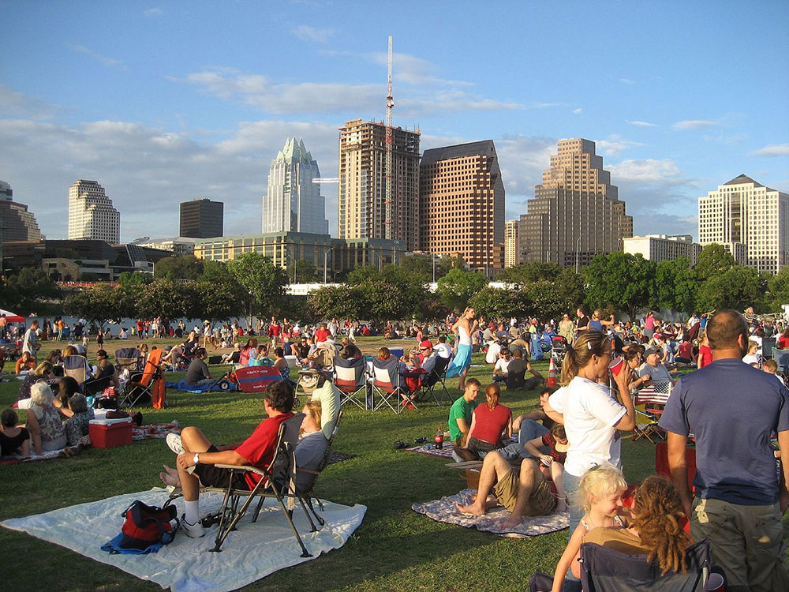
.jpg){kind=link}
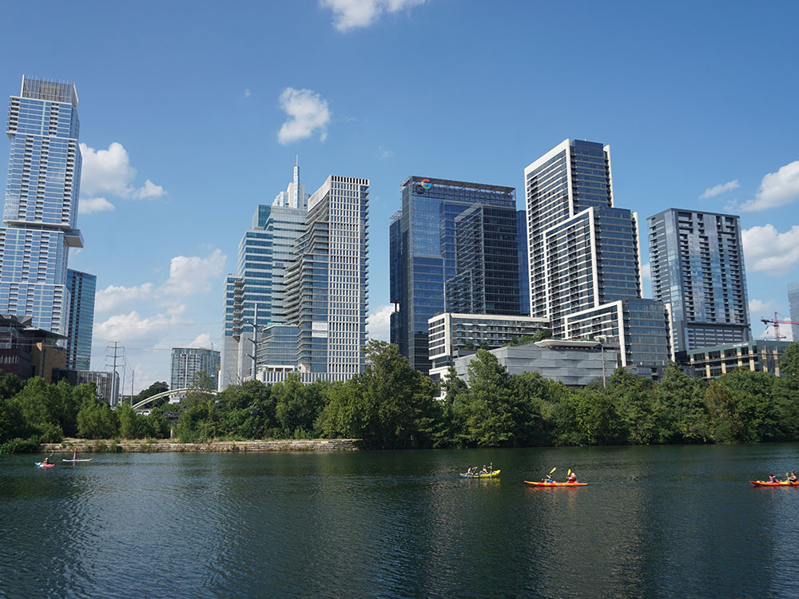
.jpg){kind=link}